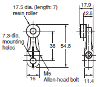

Note: Unless otherwise indicated, a tolerance of ±0.4 mm applies to all dimensions.
Building Automation
Industrial Automation
Power Automation & Safety


Bangladesh Distributor
WL-N / WLM-N
Two-circuit Limit Switch / Long-life Two-circuit Limit Switch

Select the Best Two-circuit Switch for the Operating Environment and Application from a Wide Range of Models
about this Product Family
Related Contents
- Limit Switches
- Features
- Lineup
- Specifications
- Dimensions
- Catalog
last update: October 03, 2016
Caution: All units are in millimeters unless otherwise indicated.
General-purpose Switches
Standard Switches
Switches with Roller Lever Actuators
Basic, High-sensitivity*1, and High-precision Switches*1
Roller lever R38
Basic
WLCA2-N
WLCA2-2-N
WLCA2-2N-N
High-sensitivity*1
(WLG2-N)
High-precision*1
(WLGCA2-N)
The only difference in the shape for High-sensitivity and High-precision Switches is the set position marker plate. *1
Roller lever R50
Basic
WLCA2-7-N
Roller lever R63
Basic
WLCA2-8-N
Adjustable roller lever
Basic
WLCA12-N
WLCA12-2-N
WLCA12-2N-N
High-sensitivity*1
(WLG12-N)
Only the external appearance of the set position indicator plate varies on high-sensitivity models. *1
*1. Manufacturing of the high-sensitivity, high-precision models has been discontinued and the models have been integrated into the WL Series.
This information is provided as reference for comparison of specifications. Refer to the model replacement table on catalog and order WL series high-sensitivity or high-precision models.
*2. The operating characteristics for WLCA12-N, WLCA12-2-N, WLCA12-2N-N, and WLG12-N are measured at the lever length of 38 mm.
Adjustable rod lever 25 to 140 mm
Basic
WLCL-N
WLCL-2-N
WLCL-2N-N
High-sensitivity *1
(WLGL-N)
Only the external appearance of the set position indicator plate varies on high-sensitivity models. *1
Adjustable rod lever
Basic
WLCAL4-N
Rod spring lever
Basic
WLCAL5-N
Fork lever lock
Protective Switches
WLCA32-41-N
WLCA32-42-N
WLCA32-43-N
WLCA32-44-N
The WLCA32-41-N is shown in the following diagram.

Note: The actuator on the WLCAL4-N and WLCAL5-N is heavy, which may result in resetting problems depending on
the direction the Switch is mounted. Mount the Switch so that the actuator is facing downwards to prevent this
problem from occurring.
*1. Manufacturing of the high-sensitivity, high-precision models has been discontinued and the models have been integrated into the WL Series.
This information is provided as reference for comparison of specifications. Refer to the model replacement table on catalog and order WL series high-sensitivity or high-precision models.
*2. The operating characteristics for WLCL-N, WLCL-2-N, WLCL-2N-N, and WLGL-N are measured at the lever length of 140 mm.
*3. The operating characteristics of WLCAL4-N are measured at a rod length of 380 mm.
Switches with Plunger Actuators
Switches with Plunger Actuators
Sealed Top Plunger
WLD18-N
Horizontal Plunger
WLSD-N
Sealed Top-roller Plunger
WLD28-N
Horizontal-roller Plunger
WLSD2-N

Sealed Top-ball Plunger
WLD38-N
Horizontal-ball Plunger
WLSD3-N
Top-roller Plunger
WLD2-N
Switches with Flexible Rod Actuators
Basic Switches
Coil Spring
WLNJ-N

Coil Spring (Multi-wire)
WLNJ-30-N
Resin Rod
WLNJ-2-N
Steel Wire
WLNJ-S2-N
* These values are for the top end of the spring, rod, or wire.
Sensor I/O connector Switches
(For details about applicable cables, refer to Connecting Sensor I/O Connectors Cable and Socket on Catalog.)
Switches with Roller Lever Actuators
Switches with Direct-wired Connectors
Basic Switches
WLCA2-LDK13-N
High-sensitivity Switches *
(WLG2-LDK13-N)
High-precision Switches *
(WLGCA2-LDK13-N)

The only difference in the shape for High-sensitivity and High-precision Switches is the set position marker plate.*
Switches with Pre-wired Connectors
Basic Switches
WLCA2-LD-M1J-N
High-sensitivity Switches *
(WLG2-LD-M1J-N)
High-precision Switches *
(WLGCA2-LD-M1J-N)
The only difference in the shape for High-sensitivity and High-precision Switches is the set position marker plate.*
Note: The following diagrams are for a indicator-equipped models.
* Manufacturing of the high-sensitivity, high-precision models has been discontinued and the models have been integrated into the WL Series.
This information is provided as reference for comparison of specifications. Refer to the model replacement table on catalog and order WL-series high-sensitivity or high-precision models.
Operation indicator Switches
Roller lever
WLCA2-LD-N
WLCA2-LE-N

Spatter-prevention Switches
Switches with Roller Lever Actuators
Switches with Screw Terminals
Basic Switches
WLCA2-[]S-N
High-sensitivity Switches *
(WLG2-[]S-N)
High-precision Switches *
(WLGCA2-[]S-N)
Switches with Pre-wired Connectors
WLCA2-[]S-M1J-1-N

Switches with Sealed Top-roller Plungers
Switches with Screw Terminals
WLD28-[]S-N
Switches with Pre-wired Connectors
WLD28-[]S-M1J-1-N
Note: The above diagrams are for Indicator-equipped Switches.
* Manufacturing of the high-sensitivity, high-precision models has been discontinued and the models have been integrated into the WL Series.
This information is provided as reference for comparison of specifications. Refer to the model replacement table on catalog and order WL-series high-sensitivity or high-precision models.
Long-life Switches
Switches with Roller Lever Actuators
Switches with Screw Terminals
Basic Switches
WLMCA2-LD-N
High-sensitivity Switches *
(WLMG2-LD-N)
High-precision Switches *
(WLMGCA2-LD-N)
Switches with Direct-wired Connectors
Basic Switches
WLMCA2-LDK13-N
High-sensitivity Switches *
(WLMG2-LDK13-N)
High-precision Switches *
(WLMGCA2-LDK13-N)
Switches with Pre-wired Connectors
Basic Switches
WLMCA2-LD-M1J-N
High-sensitivity Switches *
(WLMG2-LD-M1J-N)
High-precision Switches *
(WLMGCA2-LD-M1J-N)
Note: 1. Unless otherwise indicated, a tolerance of ±0.4 mm applies to all dimensions.
2. The above diagrams are for Indicator-equipped Switches.
* Manufacturing of the high-sensitivity, high-precision models has been discontinued and the models have been integrated into the WL Series.
This information is provided as reference for comparison of specifications. Refer to the model replacement table on page 45 and order WL-series high-sensitivity or high-precision models.
Actuators (Levers Only)
Lever: Only rotating lever models are illustrated.
WL-1A100
Standard Lever
WL-1A115
Resin Roller

WL-1A400
Bearing Roller
WL-1A118
Nylon Roller:
Roller Width: 30 mm
WL-1A105
Double Nuts
WL-1A103S
Spatter Prevention
WL-1A200
Lever Length: 50
Roller Width: 15
WL-1A300
Lever Length: 63
WL-2A100

WL-2A111
Resin Roller
WL-2A107
Double Nuts
WL-2A108
Resin Roller
WL-2A122
WL-2A106
WL-2A130
WL-2A104
WL-2A110
WL-2A105
WL-1A106
WL-1A110
WL-4A100
WL-4A201

WL-3A100
WL-3A106
Double Nut
WL-3A108

WL-3A200
WL-3A203

WL-4A112
WL-2A129
WL-5A101
WL-5A100 has a plastic roller
WL-5A103
WL-5A102 has a plastic roller
WL-5A105
WL-5A104 has a plastic roller
Note: When using the adjustable roller (rod) lever, make sure that the lever is facing downwards.
Use caution, as telegraphing (the Switch turns ON and OFF repeatedly due to inertia) may occur.
last update: October 03, 2016